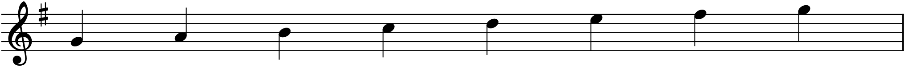
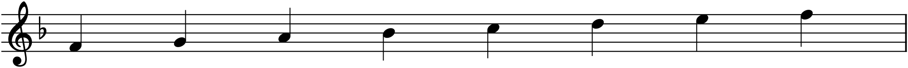
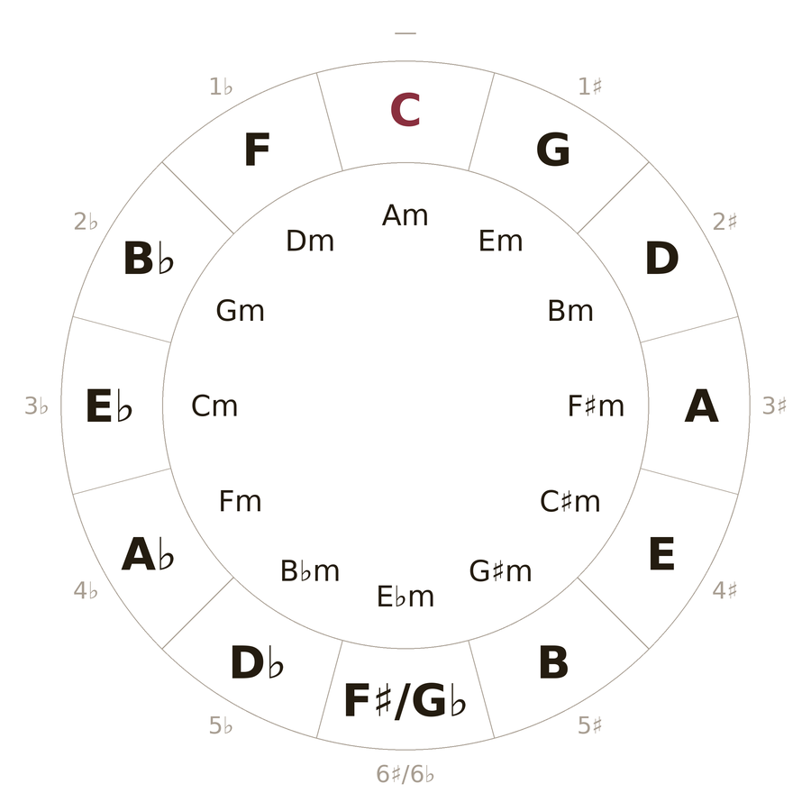

Chapter 7 ended with a loose thread. A major scale is the pattern W–W–H–W–W–W–H starting from any note, and only starting from C does it need no black keys. Start it on G and you need an F♯; start it on F and you need a B♭. Every key but C carries some fixed set of sharps or flats, the same ones, every time that key is used. Writing those accidentals out note by note would be maddening and error-prone — so notation collects them into a single declaration at the front of the staff: the key signature. This chapter is about that declaration, and about the elegant map — the circle of fifths — that organizes all fifteen of them.
8.1The problem a key signature solves
Consider G major: G A B C D E F♯ G. The seventh degree is F♯, and not just in the scale — in a whole piece in G major, nearly every F you write is meant to be F♯. Marking a sharp on each one individually would clutter the page and invite mistakes. So instead we say it once, at the very beginning: in this piece, every F is sharp. That standing instruction is the key signature, and it holds for the entire piece, in every octave, until explicitly cancelled.
8.2Reading the key signature
The key signature sits at the head of every staff, immediately after the clef and before the time signature. It is simply the sharps or flats of the key, drawn once. From that point on, every note on those letter-lines is altered automatically, with no accidental written on the note itself.

Flat keys work identically, in the other direction:

Two rules make key signatures unambiguous. A signature applies in every octave, not just the one where the symbol sits — the F♯ in Figure 8.1 sharpens every F on the staff, high or low. And it lasts the whole piece, unless a new key signature replaces it or an accidental temporarily overrides it for one measure. (An accidental written directly on a note wins for the rest of that bar, then the signature resumes.)
8.3The order of sharps and flats
The sharps and flats in a signature are not written in a random cluster; they always appear in a fixed order, and each key uses a prefix of that order. Sharps are added in the sequence
F – C – G – D – A – E – B
so a one-sharp key has F♯; a two-sharp key has F♯ and C♯; a three-sharp key adds G♯; and so on. Flats follow the exact reverse —
B – E – A – D – G – C – F
— one flat is B♭, two are B♭ and E♭, and onward. (A pair of mnemonics, each the other backwards: Father Charles Goes Down And Ends Battle for sharps, Battle Ends And Down Goes Charles’ Father for flats.) Because every key takes the next accidental in line, the number of sharps or flats is a fingerprint: tell me a key has three sharps and I know they are exactly F♯, C♯, G♯, in that order, on the staff.
8.4The circle of fifths
Here is the pattern behind the fingerprints. Take C major, with no accidentals, and move up a perfect fifth — C to G. G major has one sharp. Move up another fifth — G to D. D major has two sharps. Every time you climb a fifth, you add exactly one sharp; go the other way, descending a fifth (C to F), and you add one flat. Arrange all twelve keys around a clock by this rule and you get the single most useful diagram in tonal music.

The circle in Figure 8.3 repays study because it encodes so much at once. The accidental count of any key is its distance from C. Neighbouring keys — say G and D, one step apart — differ by a single accidental, which makes them closely related; that closeness is exactly what makes moving between them smooth, and it is the foundation of modulation in Part 4. And the whole thing closes into a loop: keep adding sharps and, at the bottom, you meet the flat keys coming the other way, the same sounds under different names (F♯ major is G♭ major on the piano). That meeting is why the practical world of key signatures stops at six or seven accidentals — past that, the simpler enharmonic spelling always wins.
8.5Naming a key from its signature
Two quick tricks read a signature backwards into a key name.
- Sharp keys: the last (rightmost) sharp is the leading tone, degree 7̂ — so the tonic is one half step above it. Four sharps end on D♯; a half step up is E; the key is E major.
- Flat keys: the tonic is the second-to-last flat. Four flats are B♭ E♭ A♭ D♭; the second-to-last is A♭; the key is A♭ major. (The lone exception is one flat, F major, worth simply memorizing.)
These are conveniences, not deep truths — with a little use you stop counting and simply recognize a signature the way you recognize a word — but they get you reading real scores immediately.
8.6Relative major and minor
Every key signature names two keys, not one — a major key and a relative minor that share the identical set of accidentals. C major and A minor both have no sharps or flats (you met this in §7.5); G major and E minor both have one sharp; and so on around the inner ring of the circle. The relative minor’s tonic sits a minor third below the major tonic — down three half steps — or equivalently on the major scale’s sixth degree. From G, down a minor third lands on E: E minor.
If the signature is the same for both, how do you tell which key a piece is in? By listening for home. The music will circle one note as its point of rest — the note the melody settles on, the chord the piece ends on. If a one-sharp piece keeps returning to G and closes there, it is in G major; if it gravitates to E and ends on an E-minor chord (often with a D♯ leading tone borrowed in, per §7.6), it is in E minor. The signature tells you the pitch collection; the music tells you which note is king.
8.7The point of all this
A key signature is not bookkeeping — it is a composer’s first declaration of where the music lives. It fixes the seven pitches you will mostly draw from, names the home those pitches orbit, and, through the circle of fifths, tells you which other keys lie close by for when you want to travel. From here on, every piece you write will open by choosing a key, and every score you read will announce its key in the first inch of the first staff. Learn to take that in at a glance and a great deal of music becomes legible at once.
In MuseScore
MuseScore handles key signatures for you — including respelling accidentals as you type, which is why entering notes in a key feels natural.
- Set the key when you create a score. The New Score wizard has a key-signature page; pick your key there and every staff opens with the right signature.
- Add or change a key signature later from the Key Signatures palette (F9 to open Palettes, if it is hidden). Select the measure where the key should begin, then double-click the signature — MuseScore inserts it and respells the following music. Drop a new key signature partway through a piece and everything from that bar on is re-keyed.
- Note input respects the key. In G major, press F in note-input mode and MuseScore enters F♯ automatically — you type letters, and the key supplies the sharps and flats, exactly as the printed signature does. To override for one note, use the ↑/↓ arrows or the toolbar accidentals from §7’s box.
To move a finished piece to another key, select all (Ctrl+A) and use Tools ▸ Transpose — MuseScore rewrites every note and the key signature together, letting you hear the same music in a brighter or darker key.
Try it: create a score in G major and enter the scale G A B C D E F G. Watch the seventh note appear as F♯ with no accidental of its own — the signature spoke for it. Then open Tools ▸ Transpose, move it up a perfect fifth to D major, and notice the signature gain its second sharp exactly as the circle of fifths predicts.